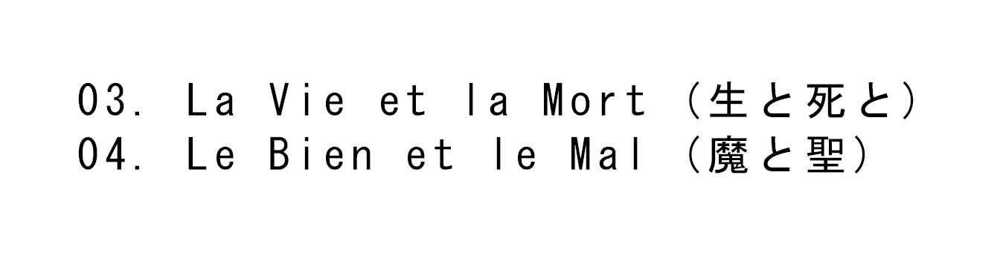

This enlistment forced to enter into existence
To come to terms with everything,
Inside and out,
with love,
with hate,
with fear,
with envy,
with others,
with society,
with morality,
with ideas,
with the universe,
with death.
Extenuating circumstances of all that the human can be : it is.
You don't choose your environment, or your circumstances, education, members family ; some of them went through awful stories or happy events in their life.
You will never know who they really are, or what they truly think of you.
Bad luck,
You're the void, total emptiness in your chest, the most vulnerable, the weakest.
Or maybe the luckiest. You're part of a time that is repeating itself
Circumstances life aims you to experience a moment on this Universe.
Maybe your parents were too strict, maybe they weren't. Maybe they teach you the wrong things or maybe you took the wrong path.
The fact is, you don't chose yet. Then you have take the strength and choose to go on left or right. Or maybe, not chosing at all.
Maybe you needed more love from them, maybe they were too protective. Maybe they left you alone. Maybe you just needed to communicate.
Straight in the heart, from the core you are just you.
Maybe it's not too late.
Maybe you just need to not be alone sometimes.
Working in progress...
As a human being, we're in constant evolution. We learn things.
From our past, we experienced moments and we create memories.
What if you forget them all ? As human beings, we have fears.
Imagine waking up in the morning and having no idea of who you are, who you were and who you will become.
It's a silly questionnement that make me feel like I have the urge to write my thoughts, ideas, memories. Of course, not secrets.
It's time to forgive yourself, and it's time to change.
Introspect yourself.
Study your feelings, look deep within you for your motivations.
You are the main subject of your story.
Then you catch everythink you can. Words, memories, knowledges.
Anything that you feel connected to it.
You even start to like sounds, odours, textures. The external world is filled with curiosity. Fractals.
Having interests is an essential condition to achieve happiness.
Being able to appreciate something so much that it is producing imbalance, this is what we call : passion.
Actually the etymology of the word " passion " from the greek πάθος (pathos) meaning "suffering", "torture", the "state of the one who undergoes", designates all the instinctive, emotional and primitive drives of the human being which hinder his ability to think and act rationally.
This explains the extreme side of enjoying something. Of course, you have to find the golden mean, the balance between what you consider is "good" and what is "bad".
Loving something doesn't have to make us suffer. Quite the contrary.
I found a book on the streets. It's a french synonym words book. I checked the word " passion " ... passion > dévouement > offrande > sacrifice > don / present > ...
it's interesting, to notice that a word can mean the total opposite. The meaning of a word depent of how you perceive it, and how your brain cells interacts and connect the datas to your present knowledge.
Breaking news ; your brain captures knowledge to create ideas and it will always level up. As you will.
You did everything precisely to arrive at this situation.
We have all experienced this immense loneliness, where everything - books, religion, everything - slips away,
and where we are, deep within us,
immensely alone and empty.
We are usually unable to face this emptiness,
This loneliness,
and we run away from it.
Dependance is one of the things in which we find refuge, soon to be indispensable, because we can't bear to be alone with ourselves.
We are one. In the loneliness, you find unity. You coexist with your own, there is everything in your sight. You know your knowledge.
Thoughts are only the reflection of connexions in your brain.
As your blood it just flows in your veins.
Things are in correct line, following logical course.
We are facing our own existence, right now.
And for all our time alive here.
Independance is a pathway which the influence of the external world seems absent. Nothing can make you slips from your way of thinking.
Fragile health makes you vulnerable.
Unable to move or to interract normally with humans. Voiceless symptoms. Closer to death ; your weak body is fighting.
Tragedy is a tender melancholy.
Closing the eyes because the fact is that I live. Exhaling slowly.
Life is grey.
Remain yourself.
Does it hurt when you die ?
How long it takes for your brain to fully disconnect from your body ? I am sure and certain that no one dies right on the spot.
The brain has to register the information before it leaves you immobile forever.
It has to take the fact that your muscles are crushed, dismembered, burst on the ground.
I start to fear it. Not death actually ; pain.
The hours of unexpected and intensive suffering until the last breath.
'Don't be that scared too, ok ?)
Don't be badly influenced by these words and don't overthink about it.
Suffering is the proof of living.
You're alive now. This world is calling your energy.
To tap into your knowledge and then engulf it all in the deep hole of forgotten memories.
But even if you have fears ; some things are inevitable and you just have to accept it.
Be brave.
Don't inject this poison into your veins.
Some living beings are more active at night, these are called nocturnal animals. They watch, hunt, move, create the night.
Nocturnes; are also melancholic, free-form piano pieces. The dark brings a form of appeasement, of calm. Thanks to the movements that the Earth exerts around the sun, we receive a limited time which is the day and the night. Depending of our activities, habits, educations, we use our times differently.
Foxes and cats are more active at night.
Depending or your location you can find awesome living beings. Or even dead one. In my coutry, you can find random people listening at super loud music standing in front of a soundsystem. Taking a break.They are not really "alive" or "dead" anymore. People's mind transcend actual reality or time. This is the underground scene. The thing with these community of people who is living apart from society is their ability to reunite spirits together, it's absolutely sick to see the power of decibels ; music actually interest people, it reunites them. You can understand a song, a music. But not the whole human or humanity.
What appears to a surface, under the light spot is what only perception can see. The core, the very truth of something is the shadow of the object. Only a few informations can be understood by the subject. We will never know the entire truth of someone. We only can know somebody. Their secrets are their own.
Emptying your mind in a place where you feel calm. Contemplating the void and feel your blood pressure. You are alone with your thoughts.
Thinking about your your past experience can be helpful to understand more clearly the future you are building. When you have the opportunity to decide your present, don't hesitate, don't have any regrets.
Depression hits a lot of us, overthinking can be bad for your mind. But it's only because you shaped it to destroy yourself that it hurts. Write over your feelings. Be careful with your acts. But there's no need to filter your thoughts. Your mind can go anywhere, and can make you travel without moving your cagebone. That's a power of being able to think. As long as you can remember the path you used and go back to your past "mind construction" to modify your own future thoughts.
Then you have the control.
Step by step, you build your own reality. The construction of your mind takes time and is funded on experiences you lived. The influence of the external world take a part of your internal constructed puzzle that is your mind. We "consume" preconceived ideas. Or perhaps we're trying our best to understand what is around us. Borrowing words, concepts, terms. Deep in our brain, we inevitably create psychic production : dreams. We find interests in things and sometimes they become goals to reach. Obviously, to reach our goals we have to work. Working to find your place. To find your own identity and principles.
Trees are secret, blind and deaf. But they have time. Humans ; can act and transmit. We have the ability to give hope (or the opposite). By moving mechanisms, you can bring things in life. You can make things happen.
In plain sight, observant human beings ; under the gaze. Walking through the used streets of the city, capital, metropolis of this country.
A.voiding eye contact.
mp3 in hand. Kyo is singing. The alcohol doesn't hit hard like as before. Developing a resistance.
"Wobbling by the side of the road,
A tree came out of the ground like a miracle,
A dreamlike illusion,
The big tree was in bloom, bottle in hand, I approached.
"I'm really sleep deprived"
This being exuded a feeling of softness, of life.
The white petals detached noiselessly in the light spring wind.
Behind me, the cars were speeding along, rushing through the static atmosphere. The air smelled of pollution.
It was gray, the clouds became more and more dense. The humidity was approaching, it was going to rain soon."
A part of my reality.
"I woke up. That night.
The dreams I had was powerful, almost real. When you dream of a Universe close to reality, it sometimes means a lot to your actual actions. Ok, sometimes it can be absolutely nonsense, a pile of absurd thoughts. But your brain is able to create them. These thoughts.
Oneiromancy is the art of divination through dreams. To understand better the human used to work with symbolics and similarity. Have you ever dream that you lose your teeth ? It's a recurrent dream, it seems. I'm not really into limit my thoughts by the words of other humans, each person has their own free will and their own interpretation.
What I find interesting is :
The dreams can open another dimension, an illusion of your reality. And you absolutely are free to imagine everything you want. There's different levels of sleep. The dream is a way to free oneself from the ordinary world, time and space. The illusion can be very strong sometimes and take you away in a very comfortable reality. Insomnia is the opposite.
The fact with illusions is that you should separate imagination with reality. Or for your best mental stability, you have to remember who you are, who you were Things can be very fast, and you can be lost sometimes. Remain yourself.
Don't go too far, stay who you are."
Keep your child's soul.
Think about when you were younger to see how far you went in your progress of life ;
The perception seems a little bit more bearable and understandable now ? Reality hits us. And all the actions you did brought you where you are.
Remember good memories train your brain to deal with injustice. Melancholy and nostalgia are also blue important feelings to study.
Colors are differents when you grow up.
Laughs and tears make you feel warm and alive. Alcohol is just rotten fruits.
Books can take you to an adventure. Games can make you interact and train your actions.
The main character is not that innocent but are free to act how they wish.
The thing about pushing your limits is the experience of losing control. There are many ways to lose control ; but how far can we go ?
We can experience things, but irreversible things can not be hided. Your actions have deep consequences
The ritual is a set of actions, words and objects, codified based on the belief in efficiency and appropriate to specific situations of existence. Humans are too easily influenced. How can we believe in anything ?
The Earth operates under a system.
We can represent the cycle of life as a circle.
When someone decides to interrupt the cycle, frustration arises.
In the middle of a conversation, someone said : "Sometimes it's better to act "bestially" than to let frustration take hold. Because it can lead to greater misfortune. Which in the end represses the original nature. "
There's no differents between us, and we are all different ; in the same time. We are all the same but differently ; in our way. The path we left on the earth
When you start to live, you don't really have the precisely idea of the the meaning of existence ; you capture the emotions around you, the present moments. The causes without thinking of the consequences.
When you grow up, you understand things better. Order and harmony. The balance of the essential.
You push your body to the limits of its physical and mental capacity, to experience the building and the self-destruction ; you just actually live.
When the body is damaged, it degrades. Over time. You become weak and fragile.
Maybe you always have been.
Any language is a system where everything is connected, or better, a system of systems, in which certain parts are closely independent or relatively independent. To isolate any sign for methodological purposes, supposes an awareness of the idea of the structured system in its vivid and effective reality.
Language is a complex phenomenon, just like the human able to communicate with words.
Much thought can escape; the message can even remain an interior language, elaboration of a personal thought, which will become clear by articulating itself in expressive form.
The personal expression of one's thoughts and the development that every human persists in cultivating is a set of values as a cultural process according to a social reality.
Language is essential to be understood. From then on a thought is born in the individual, then the concept of language is inevitably linked to the definition of human person and reflects its fundamental properties.
* Semantic : branch of linguistics that studies signifieds; what can be conveyed by statements, a process contributing to the construction of meaning in communication.
* Language is the reflection of thought
The silent. The taciturn. The one who does not express.
Can we consider ourselves lucky to be able to communicate orally ?
Talking is not a strong point for introverted humans. Using differents medium to express ourselves is sometimes more convenient.
Adapting perceptions of situations from all different perspectives, which makes the thoughts complicated ; can't use words, expressions, intonations correctly. Also the feeling people don't hear your voice. It's too weak somehow, why the decibels aren't high enough ? Of course, in a discussion the other ear have to listen to you to exchange.
Small talks can become reassuring sometimes. And sometimes regrettable.
(Feeling like I should practice speaking clearly, or I will forget everything ; theater / role play is an interesting practice to develop it.
For many years, I settled into a very erased personality, I feel so empty. I'm afraid other people will notice, so I prefer to lock myself at home to avoid interactions. No one will laugh at me anymore
Being an invisible being is comfortable sometimes ; but being handsome looks... so attractive too.
Recently, I met some people who inspire me a lot. - i lost them 3 months after )
Imagine becoming an infallible being.
And having no regrets, to speak your thoughts without stutter or your voice fades away ; only say intelligent facts, theories about the world, sharing references that interest people. Keep practising, or pretend you can do it, could help.
From an early age, you are faced to make choices.
When a problem arises, we look for a solution.
What if we can't decide ?
Preferences are developped in us when we interact with the outside world. The influence, the taste of the people we consider close friends, the environment has an impact on the decisions we make and will make later.
Deciding, making a choice defines a personality trait on the present. It's the same when you speak out loud, the words you use will define the person you are in the present time. There's 2 languages : personal language and manifest language.
The personal language is your thoughts.
And the manifest langage is what you communicate to others.
There's no good of bad choices. Only the path choosen is different.
Not being able to make a choice can be complicated when there's an urge (time concept), or when others human beings are included - maybe you have difficulties, because you don't know where to place yourself, in general ? -
Being in front of a situation you never faced before has an effect on your curiosity. The human being is trying to understand, to connect to what they want to understand when they're around phenomenons.
Time concept create the fact that the human has to find its own space, the universe is constantly expanding.
Things are placed from themselves in harmony or chaos.
"The brightest moments of my life are when I just see the world appear. These moments are made of loneliness and silence.
I no longer think of yesterday and tomorrow does not exist.
I no longer have any ties with anyone and no one is a stranger to me.
This experience is simple. These moments are pure. Those moments when, without realizing it, we even forget that we exist."
Paradoxes are exploring the opposite of the commons ideas.
Everything to its opposite.
The intimate double with whom he struggles and communicates, the two being inseparable.
One being dark and the other being light.
The essence of life is both terrifying and beautiful, both at the same time, simultaneously.
The contemplation of terror.
Beauty is the edge of love.
The sublime.
The oxymoron.
Oxymoron is a figure of speech/writing that consists of combining two words with contradictory meanings.
The opposite is a pleonasm which consists in using two terms with the same meaning.
In every ideas, there is an opposite. (There are also many differents directions and perspectives, don't forget it)
The association of two contradictory ideas is human. We have in us this balance, this balance which is responsive of our ideas.

Paradox is a proposition that seems to contain a logical contradiction, or a reasoning, a situation that contradicts intuition.
"Between the world and me, a fence.
Writing is a way to cross it without breaking it.
Writing is a way to answer to life.
We need to match one gift with another gift. This is called fair exchange.
We exchange to continue giving and receiving, without end.
Write. Still. Insist. Persist.
Still write. Emphasize. Tear.
Smear ink on the sheet. Darken pixels. Whiten pixels.
Scratch the pen. Cut out paper. Fold.
Shout silent words."
Speech or writing, thoughts or manifestation are only intermediate degrees.
This text is for Bunny, Henry, Richard, Francis, Charles and Camilla.
We want to be loved.
We dream of being loved.
This word is more accurate: dream.
We sincerely, naively dream of being loved.
That's what we believe. Innocently.
Maybe in reality, we dream of being preferred ?
Liked, yes, but a little more than the others.
We drown our despair in the eyes of others. In our personal beliefs, we drown.
Maybe we'd rather be alone, in the dark. Without anyone.
But what if we were really alone ? Lonely souls.
...
True love has no preferences.
Love is patient, is full of kindness.
Love is not envious, love does not boast, it is not puffed up.
It is neither dishonest nor interested.
It does not get angry, and does not suspect evil.
It does not rejoice in injustice, but rejoices in the truth.
Perfection only exists in the world of ideas.
Something passes through beyond preconceived ideas, towards a raw love, a simple love.
We should be content with what we have. We should not to ask too much.
Just pretend to live.
Beauty is terrific.
If I can communicate in the language of humans, but have no kindness, then I am just an empty sound.
If I distribute all my goods to the poor and I deliver my body to the flames, but I have no altruism, this is useless.
If I have the gift of understanding the world, of knowing all mysteries and science, but have no love, then I am nothing.
Science without conscience is but ruin of the soul.
The ever-expanding universe will cease,
When tongues fall silent,
When time falls,
When knowledge disappears with our memories.
Because partial is our existence, and when the chaos will reach the perfect harmony of the balance of our universe, we will each find our place in the cosmos and what is partial will disappear.
If you fill the void with excess, then the pleasure will be less. The lack and the absence make it possible to find a balance.
So that the thirst for love continues and never dries up, you have to leave space.
The experience of separation and absence is essential in love, because absence fuels the desire for union and internalizes the relationship.
"Between earth and sky, silence.
Silence is first and last."
The memories we create are more and more digitized.
The photos, videos that we take take space, however, in our head, our memories are passages, ephemeral.
Whenever you regret of not taking more pictures that day, or not having been able to record that quoted passage, an atmospheric color or ambiance ;
Use your head.
Digital datas are not essential, it takes up space, time. Mental memories are flexible.
But when you will get old, all those pieces of digital or not memories will disappear, because partial is our existence and the world around us.
We will disappear before we find out who we really are.
What is done is entrusted to silence.
Glimmer of hope, the sun enters the room.
The atmosphere is calm. Time almost seemed to stop.
Keep educating yourself, it is certain that the efforts will be rewarded.
Read, write, be curious. Learn how to speak, memorize sentences, expressions.
Exercise.
Share, smile, remember the good times and find solutions to problems.
It's going to be okay.
You are a human, full of despair and hope, full of creativity and doubts
Full of fear and strength
Full of desire and love.
The soul, the sanctuary
A place where it feels like home
Imagine a wooden table, books, and a cup of tea
Waiting for you
Your presence
It will never leave my soul
I'll wait forever for this moment
Where it feels like home
Where you discover your place
And you stay
Stay
There are 7.7 billion people on earth.
We inevitably coexist with humans. We live with them, we have divergent cultures and thoughts.
Different stories, different pasts.
We are all the same, differently. And also each human has their own authenticity and singularity. No need to say that, finding our own place in this ever-expanding universe is not an easy thing.
Sometimes, you are lucky. Sometimes you're not.
You could interact with people. It's a possibility.
But you also can decide how. Interactions is a game with multiple possibilities. As life is.
You choose the path you want, the character you are.
This is more complex, of course.
This is not ' just a game '. Because if you hit the ' game over '. It's truly over.
You can fuck everything up with an action.
There is no ' ctrl z '...
Be careful.
People tend to interact between them. They never stopped to wish for a better world.
For something to believe in.
For hope.
They never stop talking and talking
Chaining words on words, ideas on ideas,
Thus vacillates the spirit of our generations.
Everything is going so fast
The influence changes people.
The influence of one person on another disrupts a person's fundamental thoughts ;
It's like being carried away by the wind, by a waltz of notes, following the mass.
You're not thinking by yourself.
This is not a bad thing. To try to understant how the world is functionning, to perceive the perspectives of other's soul.
But when is the time when you're not thinking by yourself ? Who were you before all the influences ?
We are all growing up, developing new ideas, or keeping yourself from the world falling appart.
Try to remember.
To not go that far.
To stay yourself.
Around a table, pens and papers
The circle is created ; around books, ideas, thoughts
Writing has its own power, it liberates
Somehow we recreate the Dead Poets Society, but we are all free.
The main goal of the project is to reunite people around an atelier of writing. To develop ideas around themes, learning knowledges, words, differences.
There is no immoral writings, no censorship or sensitive subject matter. We are all equal.
For the first time of your life, you faced to what is it to be alive. You are now a part of this world.
There is a whole universe in your heart. And you dare to take it in consideration.
Quietly, with all the respect and wisdom the external world teach to the development of your identity,
You discover you have hands and voice to change the world.
Earth gived you others presents, as you senses.
You can see.
You can hear.
You can touch.
You can feel.
There is no other world than the one you own.
Timeless capsule can be created when your mind is able to forget about time.
The mind is effectively able to wander through memories ; some events can move you to moments you lived and help you to remember.
An odour, a face, a place.
Human beings' existence is built on their past experience ; the importance of understanding the details they lived may leads to the personnal development of the intelligence.
Recently, I freed myself from a dependency that was taking away my freedom. Upon regaining this freedom, I felt lost. For too long, I clung to this comfort without spreading my own wings. The life I lead may not seem very useful in the eyes of society, and I fear being considered a parasite. I am indeed lost, and I cannot find the light, so I retreat into the shadow of what I have always known: the past, nostalgia, and inaction.
Nostalgia is a complex and powerful emotional experience that involves a longing or affectionate remembrance of the past. It is a sentimental yearning for moments, experiences, places, or people from a previous time in one's life. The term "nostalgia" is derived from two Greek words: "nostos," which means "return home," and "algos," which means "pain" or "ache." Thus, nostalgia can be thought of as a bittersweet feeling of longing for a time or place that has passed and cannot be fully recaptured.
Aches are unpleasant sensations in the body that can vary in intensity and location. Aches are often a result of various underlying causes, and they serve as a signal from the body that something may be wrong or in need of attention.
The "ruin of humanity" refers to a state or condition in which the fundamental values, principles, and qualities that define human civilization and society have been severely damaged or lost. It implies a significant decline or degradation in the moral, social, and cultural fabric of humanity. Explaining the ruin of humanity involves understanding the various factors that can contribute to this decline:
- Moral Decay : When ethical standards erode and principles of compassion, empathy, and integrity are disregarded, it can lead to a sense of moral decay. Actions driven by selfishness, greed, and lack of empathy can contribute to the ruin of humanity's ethical foundation.
- Conflict and Violence: Widespread conflicts, wars, and violence among individuals, communities, or nations can cause immense suffering, destruction, and loss of life. Prolonged conflicts can hinder progress, disrupt societies, and undermine the sense of collective humanity.
- Environmental Degradation: The reckless exploitation of natural resources, pollution, and climate change pose significant threats to the planet and all living beings. The degradation of the environment can lead to ecological imbalances, affecting human livelihoods and well-being.
- Social Injustice: When societies perpetuate systemic discrimination, inequality, and marginalization, it can lead to social unrest and division. Injustice denies individuals their basic rights and dignity, corroding the sense of shared humanity.
- Technological Advancements: While technology can bring positive advancements, it can also be a double-edged sword. Misuse or lack of ethical considerations in technological developments may lead to societal disruptions and loss of human connection.
- Loss of Empathy and Compassion: A decline in empathy and compassion can lead to a lack of understanding and support for fellow humans, resulting in a sense of detachment and indifference to the suffering of others.
- Erosion of Cultural Heritage: The loss of cultural diversity, traditions, and knowledge can diminish humanity's rich tapestry of wisdom and collective memory.
- Polarization and Division: When societies become deeply polarized and divided, it can hinder cooperation, dialogue, and mutual understanding, making it challenging to address common challenges.
- Global Challenges: Humanity faces numerous global challenges, such as pandemics, poverty, and refugee crises. Failure to address these issues collectively can contribute to the ruin of humanity's ability to address shared problems.
- Lack of Long-Term Vision: Short-sightedness and a focus on immediate gains without considering the long-term consequences can lead to decisions that undermine the well-being of future generations.
It is essential to recognize and address these challenges proactively. Solutions to the ruin of humanity often require collective efforts, empathy, and a commitment to fostering a more just, sustainable, and compassionate world. By promoting values such as respect, understanding, and cooperation, humanity can strive to build a better future for all.
The "point of no return" is a metaphorical expression used to describe a critical juncture or moment in a process or decision-making where it becomes impossible to turn back or reverse the course of action without significant consequences.
Love is a fundamental aspect of the human experience. It is a complex, multifaced emotion that can manifest if various forms and contexts.
At its core, love often involves deep affection, care, compassion, empathy, and connection towards someone or something else. Love can be romantic, familial, platonic, or even extend to passions, hobbies, and interests.
Love can also involve sacrifice, understanding, trust, and mutual respect.
Different people and cultures may have distinct interpretations and expressions of love.
Being neutral or indifferent can have both positive and negative implications, depending on the context and the reasons behind the neutrality or indifference.
In some situations, neutrality or indifference may be appropriate or even beneficial.
Emotional Protection : Indifference or neutrality can sometimes serve as a defense mechanism to protect oneself from emotional distress, especially in situations where one feels overwhelmed or unable to affect change.
However, there are also potential drawbacks to being consistently neutral or indifferent :
Lack of Engagement : Indifference can lead to a lack of engagement or involvement in important issues, relationships, or activities, which may hinder personal growth, societal progress, or meaningful connections with others.
Impact on Relationships: Indifference or neutrality in personal relationships can lead to feelings of neglect, isolation, or detachment from others, potentially damaging the quality of relationships over time.
while neutrality or indifference may have its place in certain contexts, it's important to consider the potential consequences and motivations behind such attitudes. Striking a balance between neutrality and engagement, and being mindful of when neutrality is appropriate versus when it may be harmful, is key to navigating various aspects of life effectively.
The Universe is constantly moving. The seasons change. The humans are influenced by the moving planets, stars, astral directions.
We must move, evolving, change.
Changing is a natural adaptation of our environment.
Define yourself and freely are able to move from it, constant evolution is inevitable. The human form isn't stable, nor as the earth is.
Feel the flow, the distance, the proximity.
Something still connect you from the shared minded astral existence. You are alive.
The word "privacy" was first used in the 1590s to mean "a private or personal matter, a secret"
The meaning "state of freedom from intrusion or interference" was first used in 1814
Le "werthérisme" désigne l'attitude ou le comportement inspiré par le personnage de Werther, le protagoniste du roman de Goethe. Le werthérisme se caractérise par une sensibilité exacerbée, une passion amoureuse désespérée, et une vision du monde teintée de mélancolie. Les individus qui adoptent cette attitude se laissent souvent envahir par leurs émotions, vivant de manière intense et parfois tragique leur souffrance amoureuse ou existentielle, à l'instar de Werther. Ce phénomène était particulièrement marqué dans les jeunes générations au moment de la publication de l'œuvre.
Exemple de werthérisme : Un jeune homme ou une jeune femme qui, à la suite d'une rupture amoureuse, se plonge dans une profonde mélancolie, exprime sans cesse son désespoir dans des lettres ou des poèmes, et finit par adopter un comportement excessivement dramatique, voire autodestructeur, imitant la souffrance du personnage de Werther.
* Listening at [...]
* Offering hope
* Analog : rapport de similitude entre deux choses
* Poetry & words
* Languages, communication
* Calligraphy
* Rain & Sun
* Near the forest
* Living in metropolis
* Rest
* Interruption in the middle of the night : I dreamt of tangerines
* Ruin
* X
* PUMP